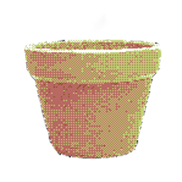
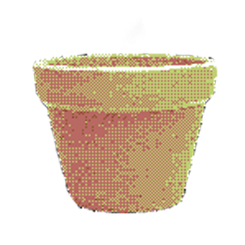

Istruzioni per l'esplorazione del sito
Istruzioni Generali
-Clicca le icone che trovi nel menu principale, ti conduranno a varie pagine (anche le immagini più irrisorie nascondo dei segreti)
-Per tornare alla home principale basta individuare e cliccare la cartuccia per Gameboy di "Home Alone 2"
Istruzioni del calcolatore
-Inserisci due valori nelle apposite caselle;
-Premi il pulsante dell'operazione che vuoi eseguire e avrai il risultato del calcolo;
-ah si se vuoi ci sono anche dei vasi accanto ad un vecchio annaffiatoio, prova ad annaffiarli se vuoi e magari ad interagirci.
-Clicca le icone che trovi nel menu principale, ti conduranno a varie pagine (anche le immagini più irrisorie nascondo dei segreti)
-Per tornare alla home principale basta individuare e cliccare la cartuccia per Gameboy di "Home Alone 2"
Istruzioni del calcolatore
-Inserisci due valori nelle apposite caselle;
-Premi il pulsante dell'operazione che vuoi eseguire e avrai il risultato del calcolo;
-ah si se vuoi ci sono anche dei vasi accanto ad un vecchio annaffiatoio, prova ad annaffiarli se vuoi e magari ad interagirci.

Home